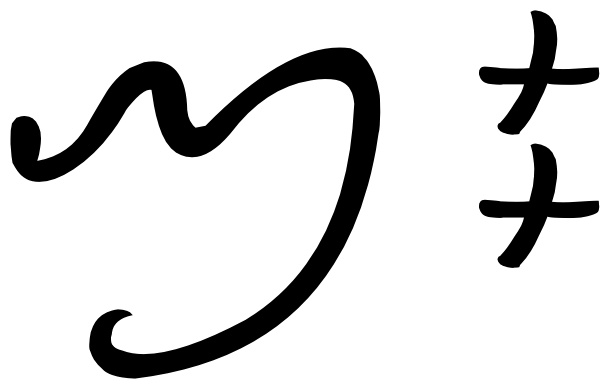

This page brings together basic information about the Tai Yo script and its use for the Tai Yo language. It aims to provide a brief, descriptive summary of the modern, printed orthography and typographic features, and to advise how to write Tai Yo using Unicode.
Tai Yo (or Lai Tay) is a Southeast Asian abugida used in Vietnam for the Tai Yo language. The Lai Tay script is now out of common use, but there are enough manuscripts to allow linguistic study. Some very old Tai Yo scholars can still read the manuscripts, which are preserved in both private and in personal collections. The script is now being taught and studied by the Tai Yo community, with the support of the local government and teachers.
Under the influence of Chinese texts, Tai Yo text is read vertically in columns that run from right to left. Vowel signs generally appear below the base consonant, but some appear to its right in certain contexts. Rendering requires context-sensitive shaping and positioning of glyphs. The script is largely written without punctuation, but may use Chinese punctation marks. There are no tone markers, or numeric digits.
Unicode 16 has 1 dedicated block, comprising 55 characters.
The Tai Yo script is an abugida, ie. each consonant contains an inherent vowel sound. See the table to the right for features of the Tayo script (not specific to this orthography).
Tai Yo text runs left-to-right in vertical lines that progress from right to left (like Chinese). There is no case distinction. Words are separated by spaces.
Unicode encodes 29 basic consonant letters for native consonant sounds. Additional consonants may be added for an extended repertoire once they are shown to be well attested.
Medial labialisation is normally achieved using a combining mark, but ligatures are used for the sounds kʷ and kʷʰ. There are no consonant clusters, otherwise.
Finals are generally written using ordinary consonant letters, but there are also 7 characters representing rhymes that each end with a consonant.
Vowels following a consonant are all written using vowel signs. All vowel signs are typed and stored after the base consonant. Most of the vowel signs are letters that appear below the base consonant when rendered. However, a few are rendered to the right of the base consonant. and those are encoded as combining marks. There are no prebase vowel glyphs nor circumgraphs. There are also no composite vowels.
One vowel sound can occur both below and to the right side of a consonant, and separate code points exist for each position (one a letter, the other a combining mark).
In addition to those for the plain vowel sounds, a number of the vowel signs represent diphthongs and and another set are complete rhymes.
Vowel signs don't generally distinguish between long and short vowel sounds, except in the case of , which is always long because it's counterpart is the inherent vowel.
Word-initial standalone vowels are preceded by 1E6DC (the glottal stop).
Tai Yo spells out numbers, so there are no native digits. If punctuation marks are used, they are generally borrowed from Chinese, and fullwidth.
Notable features
text runs top to bottom, with lines running from right to left (like Chinese)
most vowels are letters, but some are combining marks that appear to the right of the base consonant
no independent vowels
consonants are grouped, and sometimes repeated, in high class, low class, and other groups
The inherent vowel for Tai Yo is ɔmf,91, so kɔ is written by simply using the consonant letter, eg.
Post-consonant vowels
Vowels following a consonant are all written using vowel signs. All vowel signs are typed and stored after the base consonant. Most of the vowel signs are letters that appear below the base consonant when rendered. However, a few are rendered to the right of the base consonant. and those are encoded as combining marks. There are no prebase vowel glyphs nor circumgraphs. There are also no composite vowels.
One vowel sound can occur both below and to the right side of a consonant, and separate code points exist for each position (one a letter, the other a combining mark).
In addition to those for the plain vowel sounds, a number of the vowel signs represent diphthongs and and another set are complete rhymes.
Vowel signs don't generally distinguish between long and short vowel sounds, except in the case of , which is always long because it's counterpart is the inherent vowel.
Plain vowels
kiU+1E6C0: TAI YO LETTER LOW KO + U+1E6E1: TAI YO LETTER I
kɨU+1E6C0: TAI YO LETTER LOW KO + U+1E6E3: TAI YO SIGN EU
Tai Yo uses the following dedicated letters and one combining mark for plain vowels.
␣␣␣␣␣␣␣␣␣
The sound ɨ is written to the right of the base character when it occurs in open syllables, but appears below the base in closed syllables. To produce the vowel sign to the right of the base use , and to make it appear below the base use .
All vowel signs are typed and stored after the base consonant, and the glyph rendering system takes care of the positioning at display time.
Diphthongs & rhymes
Some of the glyphs used for diphthongs and rhymes are rendered to the right of the base consonant, and others below.
The following vowel signs are used for diphthongs. They include 3 letters and 2 combining marks.
␣␣␣␣
Examples:
The remaining vowel letters represent complete rhymes. There are 5 letters and 2 combining marks.
␣␣␣␣␣␣
Most of these vowel signs that represent a complete rhyme are used for a short a in a closed syllable. So in principle it could be argued whether the a in the transcriptions belongs to the symbols, or instead is just the inherent vowel for the preceding consonant. Example:
1E6F5 can be used as an alternative to .
Vowel length
Vowel length is distinctive phonemically in Tai Yo, but that difference is not reflected in the writing. Almost all vowel signs representing plain vowels stand for both the short and the long vowel phonemes.
Standalone vowels
Tai Yo has no independent vowel letters, but instead uses as a carrier for standalone vowels. This can represent a zero or glottal stop onset. The vowel to be pronounced is indicated by attaching a vowel sign, eg.
Unlike Lao and Thai, is not used alone in a closed syllable to represent the vowel ɔː. Instead, Tai Yo uses .
Tones
Tai Yo is a tonal language, but tones are not normally indicated in the text. The reader needs to be able to guess the appropriate pronunciation.
Some modernising attempts have been made to indicate tone by using glyphs positioned to the left of the base character. Such graphemes are not currently encoded in Unicode. Examples can be found on pages 10-11 of Nguyen et al.up,10
Vowel sounds to characters
This section maps Tai Yo vowel sounds to common graphemes in the Tai Yo orthography.
Plain vowels
i
vowel
ɨ
vowelUsed in open syllables, only.
vowel signUsed in closed syllables, only.
u
vowel
e
vowel
o
vowel
ə
vowel
ɛ
vowel
ɔː
vowel
aː
vowel
Complex vowels
iə̯
diphthong
ɨə
diphthong
uə̯
diphthong
Rhymes
ap
rhyme
at
rhyme
ak
rhyme
am
rhyme
an
rhyme
aŋ
rhyme
au̯
rhyme
aj
rhyme; medial wOnly has this sound if not followed by any other syllable components.
om
rhyme
Consonants
Consonant summary table
This table only summarises basic consonant to character assignments.
The high and low class consonants are split out from the others.
is a recent addition to the alphabet, and is quite rare, since it is not used in a religious context.
is nominally a high class consonant, but is used, according to Nguyen et alup,8, for a special syllable in the proper name of Taaw Nyi (Khun Cheuang Epic), and for at least one other Sino-Vietnamese word.
Repertoire extension
Three additional letters are not yet scheduled for inclusion in Unicode. They represent the retroflex sounds ʂ, ʐ, and ʈ, found in loan words from Vietnamese. More evidence is needed to support their inclusion. Tai Yo speakers may merge these sounds into the letters , , and or , respectively.up
Other letters that were not scheduled for inclusion in Unicode include HIGH PHO, HIGH THO, HIGH CO, HIGH YO, and HIGH QO. If they are attested they are very rare, and manuscript evidence for them has not yet been found by the proposers.
Onsets
Tai Yo syllables may commence with a consonant followed by a medial -w-.
␣
The combinations kʷ and kʷʰ are represented by special ligated forms, which have dedicated code points: and , respectively, eg.
When following other consonants the w medial is written using the same code point as is used for the rhyme -aj. It is possible to tell the difference because when the code point is used for -aj there is no following nucleus or coda; if these do follow, the reading is a medial w. Compare the following:
pronounced ŋaj, and
pronounced ŋwiən.
When used as a medial w is followed by another glyph that is written to the right side of the base consonant (including itself!), the two glyphs need to be positioned in a vertical column. For example:
pronounced ʔwaŋ, and
pronounced ŋwaj.
Finals
Codas can appear after most vowels, but only 8 consonants are used in syllable-final position. They are:
␣␣␣␣␣␣␣
These graphemes are all regular letter shapes and code points. Examples:
In addition, the vowel repertoire contains a number of rhyme-based letters that end with a consonant. The rhymes that end with plosives look like the respective onset consonant but have a stroke through them. Here is the list:
␣␣␣␣␣␣
Examples:
Consonant clusters
With the exception of the labialisation applied to some onsets (see onsets), there appear to be no consonant clusters in Tai Yo. Codas and following onsets are separated in modern texts by a space, and in older texts they do not interact with each other.
Consonant length
Tai Yo appears not to have geminated or lengthened consonant sounds.
Consonant sounds to characters
This section maps Tai Yo consonant sounds to common graphemes in the Tai Yo orthography.
Labels on the left indicate low class, high class, and coda consonants.
Sounds listed as 'infrequent' are allophones, or sounds used for foreign words, etc. Light coloured characters occur infrequently.
p
low
high
coda
pʰ
ɓ
t
low
high
coda
tʰ
ɗ
c
k
low
high
kʰ
low
high
kʷ
low
high
ʔ
f
low
high
v
high
s
low
high
z
highin Vietnamese loans.
ɣ
Used for Vietnamese loan words.
h
low
high
m
n
ɲ
low
high
ŋ
w
medial1E6EEMedial labialisation, when followed by a nucleus and/or coda.
l
j
-j
coda
Symbols
Logogram
Tai Yo has the following logogram:
Numbers
Digits
Tai Yo doesn't have a set of digits because numbers are usually spelled out.up,9
Nguyen et al. surmise that roman digits will be used in the future, and these should be fullwidth forms when single numbers are used, or otherwise run down the page, like embedded Latin text would.
Text direction
Tai Yo text is read top to bottom in vertical lines that progress from right to left across the page. This writing direction was inherited from Chinese (older Tai Yo manuscripts often also contained some Chinese text).up,2
In a few cases, combining marks that are rendered to the right of a consonant need micro adjustments so that they don't collide with the consonant.up
Vertical adjustment is also needed when 2 combining marks appear to the right of a single consonant, so that they don't overwrite each other. In such cases, the glyphs of the combining marks are stacked vertically.up

Two combining marks (actually, here, the same mark applied twice with different functions) stacked to the right of the base consonant. The pronunciation is ŋwaj.
Typographic units
Word boundaries
Words are separated by spaces in modern Tai Yo texts.
Older texts sometimes had no spacing.up,11
Graphemes
Graphemes in Tai Yo consist of single letters or letters with one or two combining marks. This means that text can be segmented into typographic units using grapheme clusters.
Phrase, sentence, and section delimiters are described in phrase.
Punctuation & inline features
Phrase & section boundaries
，␣、␣：␣。␣？␣！
Tai Yo sometimes uses no or very little punctuation. More modern texts tend to use punctuation derived from Chinese.
phrase
，
、
：
sentence
。
？
！
Abbreviation, ellipsis & repetition
is used as a repetition symbol.
An alternative shape for this symbol looks very similar to . Both glyph shapes may be used in the same document. Unicode does not, however, have separate code points for each shape, so it would be necessary to use a different font to achieve this alternation within the same document.
Line & paragraph layout
Line breaking & hyphenation
In more modern texts, where words/syllables are separated by spaces, line-break opportunities occur at spaces.
In older texts that used no space a line can be broken after any letter (but not between a letter and combining mark). This includes breaks within a syllable, ie. the nucleus or the coda can be wrapped to the next line.up,11